Project Electronics
In this part on project electronics, I will be covering the library for EAGLE and microcontroller that I will be using for my project.
Library and Microcontroller choice
I will be using the ATTINY84 microcontroller for my module project, it is a
Insert datasheet here
Since Eagle does not come with a preinstalled part for the ATTINY84, I will have to search for one.
Searching for a library
Googling for a library I found the Sparkfunlibrary
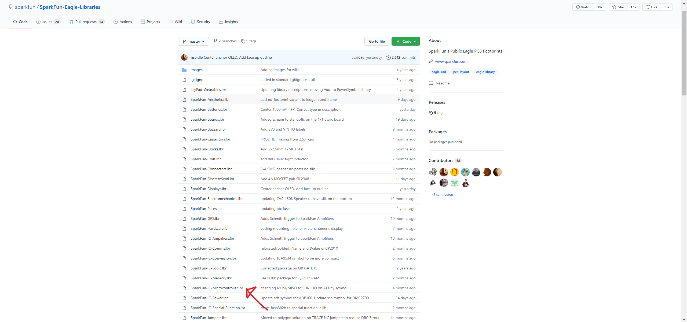Even though there are multiple libraries, I won't be installing all of them since it'll clutter up the part selection.
I'll just be installing the SparkFun-IC-Microcontroller.lbr which will contain my attiny84 part.
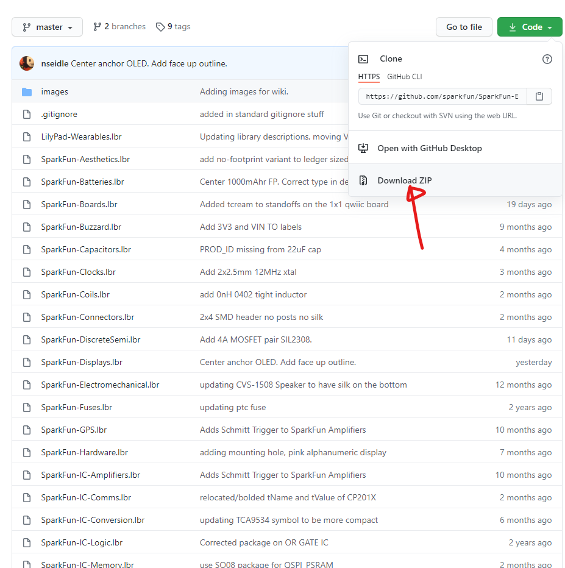After downloading the library as a .zip file, 'unzip' it. I then copied 'SparkFun-IC-Microcontroller.lbr' to my Eagle library folder.
Eagle
After restarting Eagle, I 'activated' the library. We can now lay out a basic schematic of our board.
We can begin by inserting a frame into our schematic:
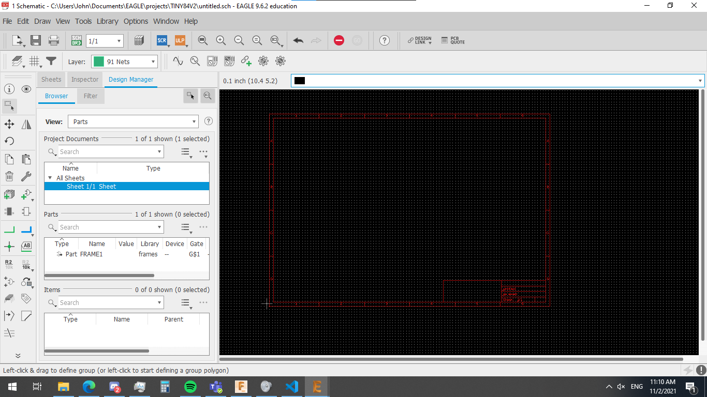To start, I'll insert the Tiny84 IC into my schematic.
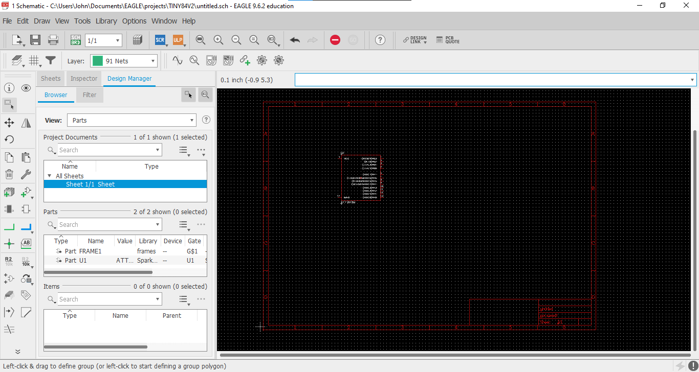I then added my ISP header and did some basic nets such as the MOSI/MISO pins:
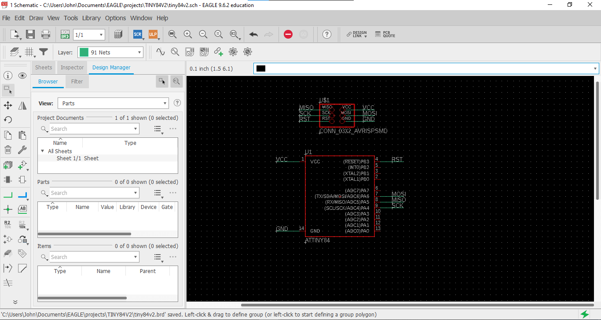Afterwards, I proceeded to add the rest of my components such as the headers for which the DC motors and servo motor will connect to:

The DC motor
Board layout
After finishing my schematic, I swapped over to the board view and laid out my components:
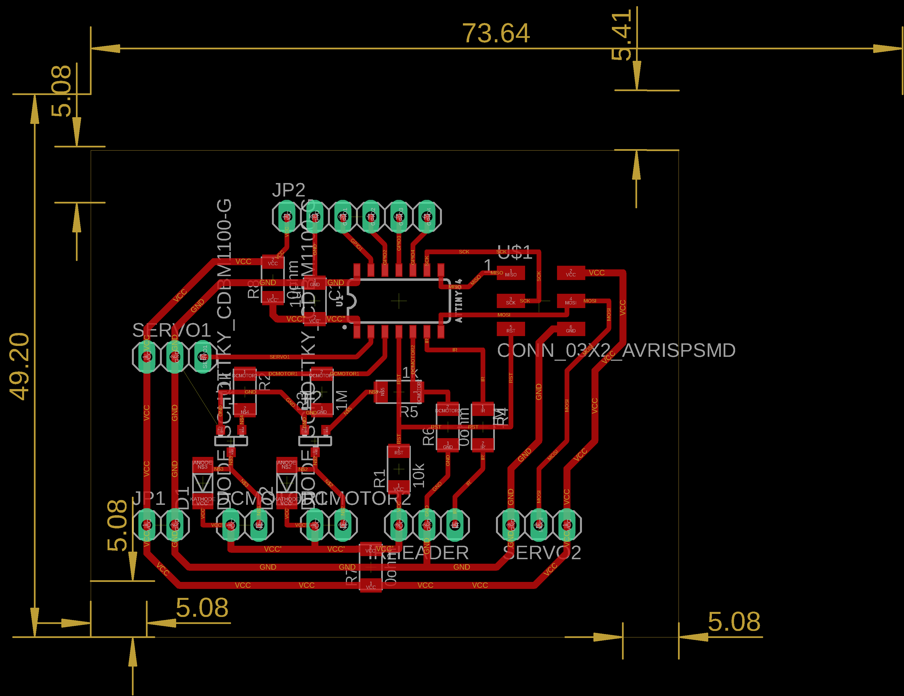I thickened the VCC and Ground traces to 24mil and had to rename some nets due to the inclusion of 0 ohm links. IF I didn't, Eagle would assume that the two nets were meant to be shorted together, showing up in the DRC as an error.
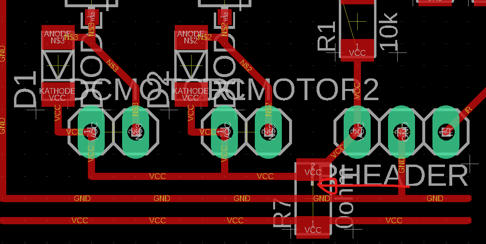
Exporting to mods
As can be seen in the previous image, due to my board almost taking up the entire copper blank (75mm x 50mm), I won't be cutting an outline, just the traces out.
I'll hide all the layers and just show the pads and top layer. Then simply export a 1000 DPI image in monochrome
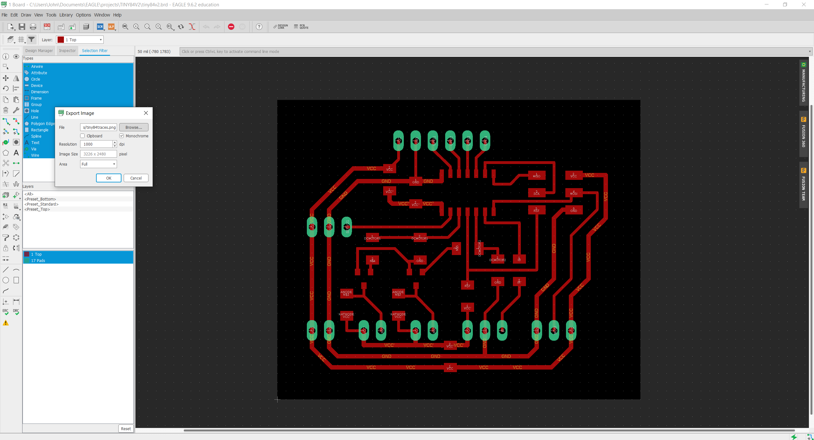The exported image:
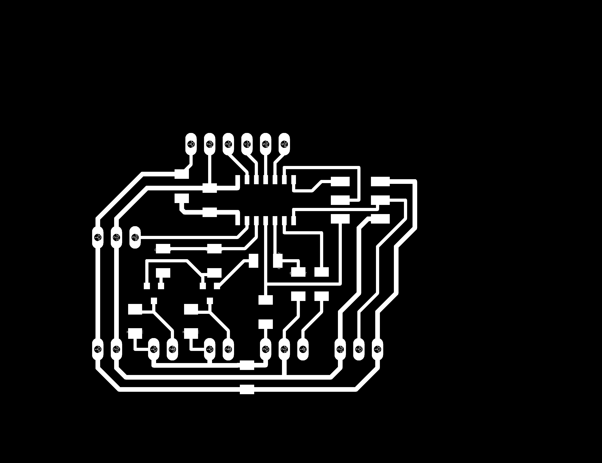Mods configuration
After exporting the image, I can now import it into mods : https://skeatz.github.io/mods/index.html (Right click -> Open Server Program -> scroll down for 'Mill 2D PCB PNG')
I'll import my image that I exported from the previous section with the 'SELECT PNG FILE' button ,it opens up a file explorer prompt which is then used to select the previously made image:
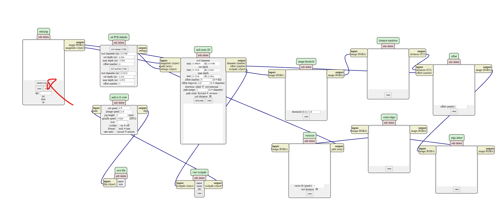We'll then change and enter the appropriate settings for cutting traces:
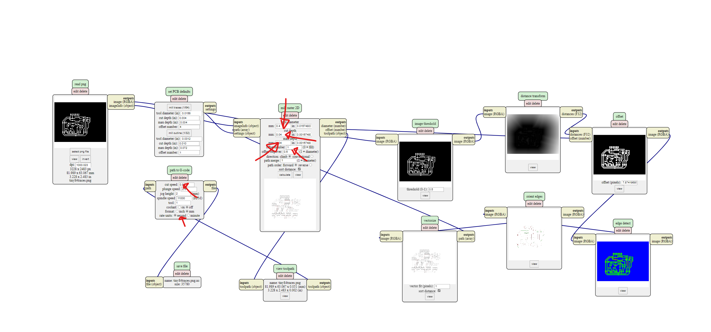Then hit the 'calculate' button, the .nc file should automatically start downloading:
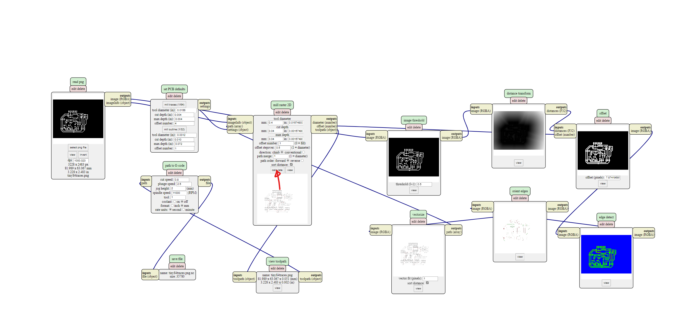Now that I have my .nc file, I can transfer it to the stepcraft for it to mill the board.
Board milling
I copied over my .nc file onto the laptop connected to the stepcraft, I then set my X and Y followed by using the z level sensor to set Z.
Board soldering
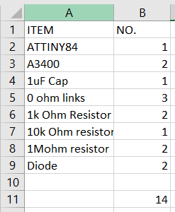I first began by soldering my IC:
Insert image here
I then soldered on the components on hand such as my 1uF cap and 10kΩ resistors:
Insert image here
I also had a shot at soldering the header pins directly onto the board:
Insert image here
I then got my transistors and diodes which I proceeded to solder onto the board:
Insert image here
I think that they're alright but might need either more solder to be applied in the future to have a stronger joint, preventing the header pins from breaking off
I'm quite happy with my soldering, compared with my previous boards, I was better during the flux application process which made things easier as well as cleaner due to my board not drowning in a pool of flux:
Insert finished board here